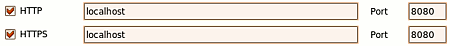
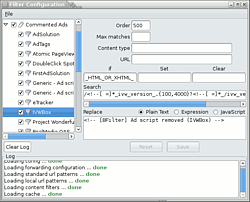

BFilter
Archivierte Anleitung
Dieser Artikel wurde archiviert, da er - oder Teile daraus - nur noch unter einer älteren Ubuntu-Version nutzbar ist. Diese Anleitung wird vom Wiki-Team weder auf Richtigkeit überprüft noch anderweitig gepflegt. Zusätzlich wurde der Artikel für weitere Änderungen gesperrt.
Anmerkung: Das das Programm nicht weiterentwickelt wird, bietet sich Privoxy als Alternative an. Die RegExp-Filter von BFilter können ohne großen Aufwand übernommen werden, da beide RegExp-Engines Perl-kompatibel sind.
Zum Verständnis dieses Artikels sind folgende Seiten hilfreich:
BFilter  ist ein Programm, um die Privatsphäre im Internet zu erhöhen. Dank seiner intelligenten Heuristik erkennt es zielsicher Werbung, neben normalen Grafiken werden auch Flash-Animationen untersucht und gegebenenfalls geblockt. Wer mag, kann aber auch einzelne Elemente gezielt blocken. Eine bebilderte Beschreibung des Programms ist in der Projektvorstellung BFilter - ein universeller Werbefilter zu finden.
ist ein Programm, um die Privatsphäre im Internet zu erhöhen. Dank seiner intelligenten Heuristik erkennt es zielsicher Werbung, neben normalen Grafiken werden auch Flash-Animationen untersucht und gegebenenfalls geblockt. Wer mag, kann aber auch einzelne Elemente gezielt blocken. Eine bebilderte Beschreibung des Programms ist in der Projektvorstellung BFilter - ein universeller Werbefilter zu finden.
Bei Fragen oder Problemen bietet sich der Sammelthread im Forum an, da dort Fragen meistens am schnellsten beantwortet werden. Dort werden auch neue Funktionen besprochen und teilweise neue Versionen mit erweitertem Funktionsumfang zur Verfügung gestellt.
Installation¶
Das Programm ist nicht in den offiziellen Paketquellen enthalten.
Fremdpakete¶
Die letzte Version von BFilter ist am 04. Juni 2008 veröffentlicht worden, seitdem ruht die offizielle Entwicklung seitens des Autoren. Allerdings hat sich hier im Forum bei ubuntuusers eine kleine Community entwickelt, die nicht nur die Blocklisten und Userfilter pflegt, sondern auch am Programm selber bastelt. Bisher ist daraus kein offizieller Fork entstanden, aber Fremdpakete kann man hier beziehen:

Ferner wird man eventuell libace 5 manuell vorher installieren müssen, damit sich BFilter installieren lässt:
Hinweis!
Fremdpakete können das System gefährden.
Die wesentlichen Änderungen zum Original sind:
Die externen Abhängigkeiten sind auf einen aktuellen Stand gebracht worden und die Filterleistung wurde dadurch bei Userfiltern merklich erhöht, da in der verwendeten RegExp-Engine zwischenzeitlich einige Bugs behoben wurden.
Die Trayicon-Engine wurde komplett ausgetauscht und kann nun transparente Icons richtig anzeigen.
Die gesamten Grafiken wurden durch hübschere ausgetauscht.
Die angezeigten Fehlermeldungen von BFilter im Browser wurden durch ein moderneres Design ausgetauscht.
Einige Filter sowie die Blocklisten wurden aktualisiert.
BFilter kann nun genau wie Privoxy den Referer fälschen. Das heißt, der Referer-Header wird innerhalb des gleichen Hosts ungefiltert durchgelassen und nur dann entfernt, wenn die alte und neue Seite von einem unterschiedlichen Host geliefert werden. Um dieses Feature zu aktivieren muss man "
fake_referer=yes" setzen. Auf Wunsch kann man diese Funktion auch für einzelne Seiten ausschalten, so dass als Referer der Host der aktuellen Seite zurückgegeben wird. Das Verhalten kann man in der urls.local mit dem Kommando "FORCEREFERER" fernsteuern.BFilter kann auch den "User Agent" fälschen. Dazu muss nur in der urls.local eine Liste angelegt werden. BFilter sucht sich dann bei jedem Start einen Eintrag aus und sendet diesen fortan als User Agent. Um dieses Feature auch für Leute interessant zu machen, die den Rechner tagelang laufen haben, wechselt BFilter den User Agent alle 5000 Browser-Requests aus. Beispielliste:
USERAGENT Mozilla/5.0 (Windows; U; Windows NT 5.1; en-US) AppleWebKit/525.13 (KHTML, like Gecko) Chrome/0.A.B.C Safari/525.13 USERAGENT Mozilla/5.0 (Windows; U; Windows NT 5.1; de; rv:1.9.0.10) Gecko/2009042316 Firefox/3.0.10 USERAGENT Mozilla/5.0 (X11; U; Linux i586; en-US; rv:1.7.3) Gecko/20040924 Epiphany/1.4.4 (Ubuntu) USERAGENT Opera/9.80 (Macintosh; Intel Mac OS X; U; en) Presto/2.2.15 Version/10.00
BFilter kann, ähnlich wie die Firefox-Extension NoScript, alle Javascripte entfernen, die von fremden Servern geladen werden. In den allermeisten Fällen handelt es sich bei solchen externen JavaScripten um Skripte, die Werbung erzeugen oder andere nervende Dinge, die das Surfen beeinträchtigen. Ein anderer positiver Nebeneffekt ist, dass durch den Wegfall dieser Javascripte die Webseiten schneller geladen werden und weniger Traffic erzeugt wird. Auch erhöht sich dadurch die Sicherheit beim Browsen. Standardmäßig ist diese Funktion deaktiviert und muss erst mit remove_external_scripts=yes eingeschaltet werden. Sollten auf bestimmten Seiten externe Skripte doch erlaubt werden, so kann dies in der urls.local mit einem Eintrag wie z.B.
AllowExternalScripts http://*ubuntuusers.de/*
erreicht werden.
Verwendung¶
Anschließend kann BFilter bei Ubuntu-Varianten mit einem Anwendungsmenü über den erzeugten Menüeintrag gestartet werden . Das Programm lauscht standardmäßig auf Port 8080, was in den Einstellungen aber jederzeit geändert werden kann.
Einrichten des Browsers¶
Damit der Browser auch über BFilter kommuniziert, muss dieser erst noch richtig konfiguriert werden. In den Netzwerkeinstellungen des Browsers muss deswegen unter "http" localhost und unter "Port" 8080 stehen. Danach kommuniziert der Browser über BFilter, der dann Werbung usw. automatisch rausfiltert. BFilter muss fortan immer mit dem Browser gestartet werden, weil dieser sonst ohne BFilter keine Seiten mehr aufrufen kann.
Zur besseren Illustration hier noch ein Bild wie die Einstellungen im Browser auszusehen haben: 
Automatischer Start¶
Anstatt BFilter jedes Mal manuell zu starten, kann es auch einfach automatisch gestartet werden. Hierzu erstellt man eine neue Datei und fügt folgenden Inhalt ein:
1 2 3 | #!/bin/bash sleep 10 bfilter-gui |
Nach dem Speichern setzt man unter man "Eigenschaften -> Zugriffsrechte -> Datei als Programm ausführen" ein Häkchen. Danach legt man einen neuen Autostart-Eintrag an. Danach wird mit der grafischen Anmeldung BFilter automatisch gestartet. Sollte das BFilter-Symbol nicht im Panel erscheinen, sondern darunter, so kann man die Sekundenzahl bei sleep erhöhen.

Einführung in die Filtermöglichkeiten von BFilter¶
Mit BFilter kann man auf verschiedene Art und Weise Elemente blocken oder sogar löschen lassen. Leider ist die Dokumentation nicht sehr ausführlich und an einigen Stellen auch ein wenig schwer zu verstehen, sofern man sich mit der Materie noch nie befasst hat. Sehr viel ausführlicher ist diese Anleitung Schritt-für-Schritt zu Regulären Ausdrücken - Ein Einführungskurs  , die in weiten Teilen mit der in BFilter benutzen RegExp-Engine kompatibel ist.
, die in weiten Teilen mit der in BFilter benutzen RegExp-Engine kompatibel ist.
Wer sich genügend Grundwissen angeeignet hat, kann sich die in BFilter verwendeten Userfilter ansehen oder die hier veröffentlichten. Zum Erstellen von Userfilter haben sich Tools wie Opera Dragonfly oder der Element Inspector von Chromium als sehr nützlich erwiesen, da man mit ihnen sehr schnell gesuchten Quelltext ausfindig machen kann, indem man ungewollte Elemente einfach anklickt.
Einzelne Elemente blocken¶
BFilter bietet die Möglichkeit einzelne Elemente wie Bilder, Flash-Animationen, JavaScripte etc. direkt zu blocken. Mit dieser Methode kann man z.B. nervende Overlay-Banner löschen, indem man einfach das zumeist externe JavaScript blockt, das für die Generierung zuständig ist. Im Einzelnen gibt es folgende Schlüsselworte, die man in der urls.local verwenden kann.
| Schlüsselwort | Rückgabe an dem Browser |
HTML | leere HTML-Seite |
IMAGE | transparentes 1x1 Pixel großes GIF-Bild |
FLASH | unsichtbares FLASH |
JS | leere JavaScript-Datei |
AD | je nachdem was angefordert wurde entscheidet BFilter selber was zurückgeliefert wird (leere Datei oder unsichtbares Element) |
FORBID | Fehlermeldung "Access Denied" |
ALLOW | hebt alle obigen Schlüsselworte auf |
NOFILTER | die gesamte Seite wird von der Filterung ausgenommen, dies betrifft die Heuristik wie auch eigene Filter |
+++ | siehe weiter unten |
--- | s.u. |
+N oder -N (N = Nummer) | s.u. |
Im Grunde reicht es, die störenden Elemente mit "FORBID" oder "AD" zu blocken. Wer möglichst genau sein möchte, kann aber die spezialisierten Schlüsselwörter verwenden, um eventuelle Fehlermeldungen im Browser oder Artefakte in Webseiten zu verhindern. So führt z.B. das Blocken via "FORBID" von externen JavaScripten zu einem Eintrag in der Fehlerkonsole, dass das verlinkte JavaScript nicht geladen werden konnte. Wenn man statt dessen "JS" benutzt, erscheint diese Fehlermeldung nicht, da an den Browser eine leere Datei statt einer Fehlermeldung geleitet wird.
Beispiel für einen Eintrag in der urls.local
FORBID http://forum.ubuntuusers.de/*
Mit obigem Eintrag würde man dem Browser den Zugriff auf das Forum von ubuntuusers verbieten und statt dessen würde eine Fehlermeldung erscheinen.
Feintuning bei Falschfilterung¶
Es kann vorkommen, dass BFilter auf der einen oder anderen Seite eine Grafik fälschlicherweise als Werbung erkennt und diese entfernt. Das kann man aber zum Glück sehr einfach beheben und zwar mit ---- oder -N. Um die Funktionsweise zu verstehen, muss man wissen, dass die Heuristik von BFilter jedem Objekt intern einen Wert zuordnet, der die Wahrscheinlichkeit widerspiegelt, dass es sich um ungewollte Werbung handelt. Ist die Heuristik zu aggressiv oder zu schwach, kann man für bestimmte Seiten diese Werte künstlich erhöhen oder verringern, ohne dass man die Filterung komplett ausschalten muss.
Beispiel: Sollten z.B. auf der Bildersuchseite von Yahoo teilweise die kleinen Vorschaubilder gelöscht werden, kann man die Heuristik dazu bewegen diese wieder anzuzeigen, indem man
------ /http://.*\.images\.search\.yahoo\.com/search/images/.*/
in die urls.local einträgt. Obiger Eintrag ist übrigens identisch mit
-6 /http://.*\.images\.search\.yahoo\.com/search/images/.*/
Dasselbe mit Wildcards, die zwar nicht so mächtig aber dafür leichter zu verstehen sind
-6 http://*.images.search.yahoo.com/search/images/*
Das ------ oder -6 bewirkt, dass jedem Objekt Punkte von der berechneten Wahrscheinlichkeit abgezogen werden. Jedes Minus verringert diesen Wert, wie viele Minus- oder Pluszeichen für eine Seite benötigt werden, muss man allerdings jedes Mal ausprobieren.
Erkennt die Heuristik hingegen nicht alle Werbung auf einer Seite, kann das entsprechende Element entweder direkt in die urls.local eingefügt werden oder aber man weist die Heuristik an aggressiver vorzugehen. Dies geschieht analog zu dem obigen Beispielen, lediglich benutzt man ein +, der optimale Zahlenwert bzw. die Anzahl Pluszeichen muss durch Ausprobieren herausgefunden werden.
Beispiel: Auf der Seite http://distrowatch.com/ bleibt Werbung stehen. Das passiert, weil die eingeblendete Werbung auf demselben Server liegt wie die Seite selbst und für Werbung sehr untypisch ist. Um auch diese Werbung automatisch löschen zu lassen, fügt man folgendes in die urls.local ein:
+5 http://distrowatch.com*
Fortan wird dann auch diese Werbung nicht mehr angezeigt.
Möchte man in einem Eintrag Regular Expressions benutzen, muss man den Eintrag mit // einschließen, wie weiter oben gezeigt. Ansonsten werden Wildcards als Mustererkennung benutzt.
Eigene Filter erstellen¶
BFilter ermöglicht es dem Anwender, eigene Filter zu erstellen, mit denen er Webseiten direkt modifizieren kann. Diese Filter können entweder mit RegEx oder aber JavaScript erstellt werden. Leider bietet BFilter keine Möglichkeit RegEx-Filter direkt zu testen, weswegen man sich am besten einen RegEx-Tester installiert.
Die Erstellung läuft im Grunde immer identisch ab, man erstellt einen neuen Filter und trägt unter URL die Adresse der Webseite ein, unter If trägt man meistens _HTML_OR_XHTML_ ein. Unter Search gibt man den Such-RegEx ein, nach dem BFilter im Quelltext der Webseite suchen soll. Hier darf man nicht vergessen, den RegExp mit // zu umklammern, sonst wird leider nichts gefunden.
Beispiele¶
Beispiel 1¶
Möchte man im ubuntuusers-Forum alle "Windoof"-Vorkommen durch "Windows" im Text ersetzen, sähe der Filter wie folgt aus:
URL: | http://forum.ubuntuusers.de/topic/* |
If: | _HTML_OR_XHTML_ |
Search: | /windoof/ |
Replace: | Windows |
Danach speichert man den neuen Filter und aktiviert ihn. Ab jetzt werden alle "Windoof"-Textstellen durch "Windows" ersetzt.
Beispiel 2¶
Im Forum wird häufig der Textsmiley ^^ verwendet, was dazu führt, dass seit Inyoka der Text hochgestellt und längere Textpassagen schlecht lesbar werden. Wer möchte kann auch dieses Problem mit einem Filter beheben, so dass der Lesefluss nicht gestört wird.
URL: | http://forum.ubuntuusers.de/topic/* |
If: | _HTML_OR_XHTML_ |
Search: | /(<sup>|</sup>)/ |
Auf diese Weise kann man sehr schöne Filter erstellen, allerdings sind manche Aufgaben nur sehr schwer oder gar nicht über RegEx zu erledigen, weswegen man auch Filter in JavaScript erstellen kann. Wer diese Möglichkeit nutzen möchte, muss nur unter Replace JavaScript aktivieren. Bei den mitgelieferten Filtern kann man sich die Funktionsweise auch genauer ansehen, z.B. bei dem Filter "Obfuscated JS". Dort wird mit einem JavaScript-Filter nach absichtlich zerstückelten JavaScripten gesucht und auch aus dem Quelltext der Webseite gelöscht. Zerstückelte JavaScripte sind eine beliebte Methode der Werbeindustrie, um gängige Werbefilter auszutricksen.
Zeilenumbrüche in Inyoka¶
Der Vollständigkeit halber hier aber auch noch einige Filter, die zum Einen die Funktionsweise dieser Filter auf JavaScript-Basis verdeutlichen sollen und zum Anderen für ubuntuusers.de-Nutzer interessant sind. Die Filter fügen im ubuntuusers-Forum Zeilenumbrüche ein, die von den Usern zwar gesetzt wurden, aber von Inyoka nicht mehr angezeigt werden. Damit die Filter funktionieren, muss unter Replace JavaScript aktiviert werden.
Die normale Post-Ansicht:
URL: | http://forum.ubuntuusers.de/topic/* |
If: | _HTML_OR_XHTML_ |
Search: | /<div class="text">.*?</div>/ |
Replace: | var StartString = arguments[0];
var ReplacedString = StartString.replace(/[\n]+/gi,'<br>');
ReplacedString = ReplacedString.replace(/<br>\s+/gi,'');
return ReplacedString; |
Die "Persönliche Nachrichten"-Ansicht:
URL: | http://ubuntuusers.de/privmsg/inbox/* |
If: | _HTML_OR_XHTML_ |
Search: | /<div class="prvmsg_body">.*?</div>/ |
Replace: | var StartString = arguments[0];
var ReplacedString = StartString.replace(/[\n]+/gi,'<br>');
ReplacedString = ReplacedString.replace(/<br>\s+/gi,'');
return ReplacedString; |
Der folgende Filter verändert nur die Darstellung der schon vorhandenen Posts. Die Vorschau kann über BFilter nicht modifiziert werden, da sie dynamisch erzeugt wird.
Die "antworten"/"zitieren"-Ansicht:
URL: | /(http://forum\.ubuntuusers\.de/topic/.*/reply/|http://forum\.ubuntuusers\.de/post/.*/quote/)/ |
If: | _HTML_OR_XHTML_ |
Search: | /<p><a href="http://ubuntuusers.de/user/.*?</td>/ |
Replace: | var StartString = arguments[0];
var ReplacedString = StartString.replace(/[\n]+/gi,'<br>');
ReplacedString = ReplacedString.replace(/<br>\s+/gi,'');
return ReplacedString; |
Postings von Dauerkleinschreibern entfernen¶
Hinweis:
Es gibt auch Menschen mit bestimmten Beeinträchtigungen, für die eine Unterscheidung zwischen Groß- und Kleinschreibung mit großem Aufwand verbunden wäre. Dies sollte man respektieren. Deswegen ist der folgende Filter nur exemplarisch zu betrachten.
Im Forum gibt es immer mal wieder Benutzer, die ihre Beiträge komplett klein schreiben und so die Lesbarkeit ihrer Texte stark einschränken. Im Forum gab es deswegen schon diverse Diskussionen. Wer sich durch solche Beiträge gestört fühlt, kann sie automatisch durch BFilter filtern lassen. Der Filter löscht alle Beiträge ab 200 Zeichen, die keine 5 Großbuchstaben enthalten. Zur Analyse werden dabei alle Zitate, Codeblöcke, Links und sonstige HTML-Tags entfernt, so dass möglichst nur noch der Text des Posters übrig bleibt. Wem das zu restriktiv ist, kann die Anzahl Zeichen beliebig erhöhen, dazu einfach die ersten beiden Variablen anpassen. Gefilterte Beiträge werden durch den roten Schriftzug "****** Achtung, Posting eines Dauerkleinschreibers entfernt ******" ersetzt. Damit der Filter funktioniert muss noch bei "Replace" "JavaScript" selektiert werden.
URL: | http://forum.ubuntuusers.de/topic/* |
If: | _HTML_OR_XHTML_ |
Search: | /<div class="text">.*?</div>/ |
Replace: | var Min_Textlaenge = 200;
var Min_Grossbuchstaben = 5;
var Lang = arguments[0];
Lang = Lang.replace(/<blockquote>.*?<\/blockquote>/ig, "");
Lang = Lang.replace(/<pre>.*?<\/pre>/ig, "");
Lang = Lang.replace(/<a.*?<\/a>/ig, "");
Lang = Lang.replace(/<[^>]+>/g, "");
var Kurz = Lang.replace(/[A-Z$@]/g, "");
if (Lang.length > Min_Textlaenge && (Lang.length - Kurz.length) <= Min_Grossbuchstaben) {return '<font color=red><b>****** Achtung, Posting eines Dauerkleinschreibers entfernt ******</b></font>';}
|
Postings von Trollen löschen¶
Selbst bei ubuntuusers kann es Benutzer geben, deren Beiträge man nicht lesen möchte, weil sie einem zu trollig sind oder auf andere Art und Weise anecken. Da es derzeitig in der Forensoftware Inyoka keine Möglichkeit gibt, Benutzer zu blacklisten, kann man dieses z.B. mit diesem Filter tun:
URL: | http://forum.ubuntuusers.de/topic/* |
If: | _HTML_OR_XHTML_ |
Search: | /(<tr id="post.*?</p>).*?</tr>/ |
Replace: | var Trollnamen =/user\/(Username1|Username2|...)/i; if (arguments[1].search(Trollnamen) != -1) return ""; |
JavaScript muss unter Replace aktiviert werden.
Aber Achtung, der Filter löscht ganze Postings von den angegebenen Benutzern ohne visuelle Rückmeldung und kann u.U. zu viel löschen, wenn man nicht richtig aufpasst. Da es sich um einen RegExp handelt, kann es bei zu kurz gewählten Usernamen zu ungewollten Löschungen kommen. Filtert man beispielsweise nach den Usernamen e, so werden alle Postings von Benutzern gelöscht, die mit einem "e" anfangen!
Google-Ads löschen¶
Google präsentiert beim Suchen häufig auf der rechten Seite inhaltsbezogene Textwerbung, in der Anbieter ihre Produkte/Dienstleistungen bewerben. Diese Werbung wird in vielen Fällen als ablenkend empfunden und kann mit folgenden Filter gelöscht werden.
URL: | http://www.google.* |
If: | _HTML_OR_XHTML_ |
Search: | /<head>/ |
Replace: | <head><style>#rhs_block, #tads{display:none !important;}</style> |
Anmerkung: Der Filter ist in neueren Versionen bereits enthalten und muss nur unter "Configuration -> Filter -> HTML filters" aktiviert werden.
Erweiterung der Standard-Blocklisteneinträge¶
Sollten mit der Standard-Blockliste, die mit BFilter ausgeliefert wird, Werbung stehenbleiben oder zu viel gefiltert werden, so kann auch dies im Sammelthread berichtet werden. Wer hingegen gerne Adblock Plus-Listen benutzen möchte, kann diese automatisch via Skript konvertieren lassen. Das Skript samt Anleitung findet man in BFilter/Adblock-Plus-Liste.
Privacy-Blockliste¶
Diese Blockliste dient dazu, um weitere Trackingseiten auszuschalten. Die Heuristik von BFilter sollte Webbugs zuverlässig erkennen, kann z.B. im Sourcecode an dem hinzugefügten Zusatz /bf-si-1x1/ erkannt werden. Wer aber generell solche Seiten blocken und sicherstellen will, dass keinesfalls Informationen zu diesen Servern geschickt werden, kann noch zusätzlich folgende Eintragungen in die urls.local hinzufügen. Hierbei handelt es sich aber bevorzugt um Nischenanbieter, die von der obigen Blockliste oder den Standardeinträgen nicht abgedeckt werden. Dominiert wird der Markt von Google, deren Server aber standardmäßig bereits geblockt werden.
Die Server wurden der Liste Easyprivacy entnommen.
##### Privacy-Blockliste FORBID /http(s)?://.*123count\..*/ FORBID /http(s)?://.*24log\..*/ FORBID /http(s)?://.*3dstats\..*/ FORBID /http(s)?://.*51yes\..*/ FORBID /http(s)?://.*addcontrol\..*/ FORBID /http(s)?://.*addfreestats\..*/ FORBID /http(s)?://.*adlog\..*/ FORBID /http(s)?://.*adsensedetective\..*/ FORBID /http(s)?://.*ad-track\..*/ FORBID /http(s)?://.*alexametrics\..*/ FORBID /http(s)?://.*analytics\..*/yahoo\..*/ FORBID /http(s)?://.*analyzer2\..*/ FORBID /http(s)?://.*atatracker\..*/ FORBID /http(s)?://.*beacon\..*/ FORBID /http(s)?://.*bigstats\..*/ FORBID /http(s)?://.*blizzardcheck\..*/ FORBID /http(s)?://.*bluecounter\..*/ FORBID /http(s)?://.*bmmetrix\..*/ FORBID /http(s)?://.*bronto\..*/ FORBID /http(s)?://.*burstbeacon\..*/ FORBID /http(s)?://.*celebros-analytics\..*/ FORBID /http(s)?://.*chart\..*/ FORBID /http(s)?://.*chartbeat\..*/ FORBID /http(s)?://.*checkstat\..*/ FORBID /http(s)?://.*christmalicious\..*/ FORBID /http(s)?://.*clickability\..*/ FORBID /http(s)?://.*clickaider\..*/ FORBID /http(s)?://.*clickalyzer\..*/ FORBID /http(s)?://.*clickclick\..*/ FORBID /http(s)?://.*clickdensity\..*/ FORBID /http(s)?://.*clicktale\..*/ FORBID /http(s)?://.*clicktracks\..*/ FORBID /http(s)?://.*clickzs\..*/ FORBID /http(s)?://.*count\..*/ FORBID /http(s)?://.*counterlevel\..*/ FORBID /http(s)?://.*counters\..*/ FORBID /http(s)?://.*counters4u\..*/ FORBID /http(s)?://.*counterstation\..*/ FORBID /http(s)?://.*counting\..*/ FORBID /http(s)?://.*countit\..*/ FORBID /http(s)?://.*countnow\..*/ FORBID /http(s)?://.*countomat\..*/ FORBID /http(s)?://.*cqcounter\..*/ FORBID /http(s)?://.*crowdscience\..*/ FORBID /http(s)?://.*crwdcntrl\..*/ FORBID /http(s)?://.*cya1t\..*/ FORBID /http(s)?://.*cybermonitor\..*/ FORBID /http(s)?://.*dmtracker\..*/ FORBID /http(s)?://.*effectivemeasure\..*/ FORBID /http(s)?://.*eloqua\..*/ FORBID /http(s)?://.*eresmas\..*/ FORBID /http(s)?://.*esomniture\..*/ FORBID /http(s)?://.*estat\..*/ FORBID /http(s)?://.*etracker\..*/ FORBID /http(s)?://.*etrafficcounter\..*/ FORBID /http(s)?://.*europagerank\..*/ FORBID /http(s)?://.*everesttech\..*/ FORBID /http(s)?://.*evisitanalyst\..*/ FORBID /http(s)?://.*extreme-dm\..*/ FORBID /http(s)?://.*ezytrack\..*/ FORBID /http(s)?://.*feedproxy\.google\..*/ FORBID /http(s)?://.*fimserve\..*/ FORBID /http(s)?://.*flashadengine\..*/ FORBID /http(s)?://.*flashgamestats\..*/ FORBID /http(s)?://.*fusestats\..*/ FORBID /http(s)?://.*gcion\..*/ FORBID /http(s)?://.*gemius\..*/ FORBID /http(s)?://.*geo\.yahoo\..*/ FORBID /http(s)?://.*getclicky\..*/ FORBID /http(s)?://.*gostats\..*/ FORBID /http(s)?://.*halstats\..*/ FORBID /http(s)?://.*histats\..*/ FORBID /http(s)?://.*hitbox\..*/ FORBID /http(s)?://.*hitfarm\..*/ FORBID /http(s)?://.*hitmatic\..*/ FORBID /http(s)?://.*hitslink\..*/ FORBID /http(s)?://.*hitsprocessor\..*/ FORBID /http(s)?://.*hittail\..*/ FORBID /http(s)?://.*hittracker\..*/ FORBID /http(s)?://.*host-tracker\..*/ FORBID /http(s)?://.*hotlog\..*/ FORBID /http(s)?://.*illumenix\..*/ FORBID /http(s)?://.*ilogbox\..*/ FORBID /http(s)?://.*imrworldwide\..*/ FORBID /http(s)?://.*inboxtag\..*/ FORBID /http(s)?://.*indextools\..*/ FORBID /http(s)?://.*infocollect\..*/ FORBID /http(s)?://.*instadia\..*/ FORBID /http(s)?://.*intelli-direct\..*/ FORBID /http(s)?://.*ipcount\..*/ FORBID /http(s)?://.*iperceptions\..*/ FORBID /http(s)?://.*irelandmetrix\..*/ FORBID /http(s)?://.*itconsult\..*/ FORBID /http(s)?://.*jaron\..*/ FORBID /http(s)?://.*jstracker\..*/ FORBID /http(s)?://.*komtrack\..*/ FORBID /http(s)?://.*landingpg\..*/ FORBID /http(s)?://.*lead-alliance\..*/ FORBID /http(s)?://.*lijit\..*/ FORBID /http(s)?://.*linkconnector\..*/ FORBID /http(s)?://.*logaholic\..*/ FORBID /http(s)?://.*log\..*/checkeffect\..*/ FORBID /http(s)?://.*logtracker\..*/ FORBID /http(s)?://.*lookery\..*/ FORBID /http(s)?://.*ltrack\..*/ FORBID /http(s)?://.*masterstats\..*/ FORBID /http(s)?://.*metriweb\..*/ FORBID /http(s)?://.*microcounter\..*/ FORBID /http(s)?://.*midkotatraffic\..*/ FORBID /http(s)?://.*mstracker\..*/ FORBID /http(s)?://.*myaffiliateprogram\..*/ FORBID /http(s)?://.*mystats\..*/ FORBID /http(s)?://.*nametec\..*/ FORBID /http(s)?://.*nedstat\..*/ FORBID /http(s)?://.*nedstatbasic\..*/ FORBID /http(s)?://.*net-filter\..*/ FORBID /http(s)?://.*netflame\..*/ FORBID /http(s)?://.*netmining\..*/ FORBID /http(s)?://.*netratings\..*/ FORBID /http(s)?://.*nextstat\..*/ FORBID /http(s)?://.*niftymaps\..*/ FORBID /http(s)?://.*ninemsn\..*/ FORBID /http(s)?://.*nuconomy\..*/ FORBID /http(s)?://.*oewabox\..*/ FORBID /http(s)?://.*offermatica\..*/ FORBID /http(s)?://.*omtrdc\..*/ FORBID /http(s)?://.*onestat\..*/ FORBID /http(s)?://.*onlinewebstat\..*/ FORBID /http(s)?://.*opentracker\..*/ FORBID /http(s)?://.*optimost\..*/ FORBID /http(s)?://.*ourstats\..*/ FORBID /http(s)?://.*pickzor\..*/ FORBID /http(s)?://.*pikzor\..*/ FORBID /http(s)?://.*ppctracking\..*/ FORBID /http(s)?://.*psyma-statistics\..*/ FORBID /http(s)?://.*pureairhits\..*/ FORBID /http(s)?://.*quantserve\..*/ FORBID /http(s)?://.*ranking-hits\..*/ FORBID /http(s)?://.*ranking-links\..*/ FORBID /http(s)?://.*rapidstats\..*/ FORBID /http(s)?://.*realtracker\..*/ FORBID /http(s)?://.*reeferss\..*/ FORBID /http(s)?://.*regieci\..*/ FORBID /http(s)?://.*research-int\..*/ FORBID /http(s)?://.*revsci\..*/ FORBID /http(s)?://.*richrelevance\..*/ FORBID /http(s)?://.*ritecounter\..*/ FORBID /http(s)?://.*sageanalyst\..*/ FORBID /http(s)?://.*schoolyeargo\..*/ FORBID /http(s)?://.*searchfeed\..*/ FORBID /http(s)?://.*sedotracker\..*/ FORBID /http(s)?://.*serving-sys\..*/ FORBID /http(s)?://.*sexcounter\..*/ FORBID /http(s)?://.*sextracker\..*/ FORBID /http(s)?://.*shinystat\..*/ FORBID /http(s)?://.*sitemeter\..*/ FORBID /http(s)?://.*sitestat\..*/ FORBID /http(s)?://.*sitetracker\..*/ FORBID /http(s)?://.*sptag\..*/ FORBID /http(s)?://.*sptag2\..*/ FORBID /http(s)?://.*spylog\..*/ FORBID /http(s)?://.*statcounter\..*/ FORBID /http(s)?://.*stats4free\..*/ FORBID /http(s)?://.*superstats\..*/ FORBID /http(s)?://.*tamedia\..*/ FORBID /http(s)?://.*thecounter\..*/ FORBID /http(s)?://.*tinycounter\..*/ FORBID /http(s)?://.*tns-counter\..*/ FORBID /http(s)?://.*tophits4u\..*/ FORBID /http(s)?://.*topstat\..*/ FORBID /http(s)?://.*traceworks\..*/ FORBID /http(s)?://.*trackalyzer\..*/ FORBID /http(s)?://.*track\.decideinteractive\..*/ FORBID /http(s)?://.*trackset\..*/ FORBID /http(s)?://.*traffic4u\..*/ FORBID /http(s)?://.*trafficcenter\..*/ FORBID /http(s)?://.*trafficmaxx\..*/ FORBID /http(s)?://.*trafficzap\..*/ FORBID /http(s)?://.*trafic\..*/ FORBID /http(s)?://.*trafiq\..*/ FORBID /http(s)?://.*trafiz\..*/ FORBID /http(s)?://.*trakzor\..*/ FORBID /http(s)?://.*trendcounter\..*/ FORBID /http(s)?://.*trovus\..*/ FORBID /http(s)?://.*truehits\..*/ FORBID /http(s)?://.*tubemogul\..*/ FORBID /http(s)?://.*tynt\..*/ FORBID /http(s)?://.*tyxo\..*/ FORBID /http(s)?://.*urlself\..*/ FORBID /http(s)?://.*urstats\..*/ FORBID /http(s)?://.*useronline\..*/ FORBID /http(s)?://.*visiblemeasures\..*/ FORBID /http(s)?://.*visitorglobe\..*/ FORBID /http(s)?://.*vizu\..*/ FORBID /http(s)?://.*webhits\..*/ FORBID /http(s)?://.*webiqonline\..*/ FORBID /http(s)?://.*webmeter\..*/ FORBID /http(s)?://.*weborama\..*/ FORBID /http(s)?://.*web-stat\..*/ FORBID /http(s)?://.*webstat\..*/ FORBID /http(s)?://.*webstats\..*/ FORBID /http(s)?://.*webtraffiq\..*/ FORBID /http(s)?://.*webtrendslive\..*/ FORBID /http(s)?://.*wemfbox\..*/ FORBID /http(s)?://.*woopra\..*/ FORBID /http(s)?://.*wundercounter\..*/ FORBID /http(s)?://.*wunderloop\..*/ FORBID /http(s)?://.*wysistat\..*/ FORBID /http(s)?://.*xiti\..*/ FORBID /http(s)?://.*x-stat\..*/ FORBID /http(s)?://.*zaehler\..*/
Problembehebung¶
Das Kontextmenü des Trayicons von BFilter wird mit bestimmten Themes nicht richtig angezeigt und verschwindet sofort wieder. Dieses Problem wurde sowohl unter Ubuntu wie auch Kubuntu berichtet und tritt nicht bei den mitgelieferten Standard-Themes auf. Das Problem lässt sich derzeitig nur beheben, indem man wieder ein Theme benutzt, mit dem diese Fehler nicht auftreten. Für alle Kubuntu-User gibt es hier ein paar Tipps, wie man bei Problemen mit dem Kontextmenü dieses beheben kann.
Links¶
RegexPal
- schnell eigene RegEx testenRegex Tester
- dient ebenfalls zum RegEx testen, ist aber ein wenig komplizierterKurze Referenzübersicht für RegExp in JavaScript
- für Fortgeschrittene
- Erstellt mit Inyoka
-
 2004 – 2017 ubuntuusers.de • Einige Rechte vorbehalten
2004 – 2017 ubuntuusers.de • Einige Rechte vorbehalten
Lizenz • Kontakt • Datenschutz • Impressum • Serverstatus -
Serverhousing gespendet von